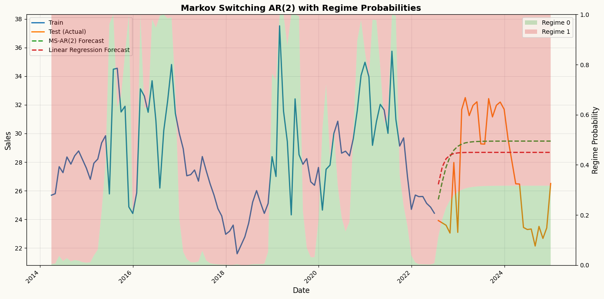
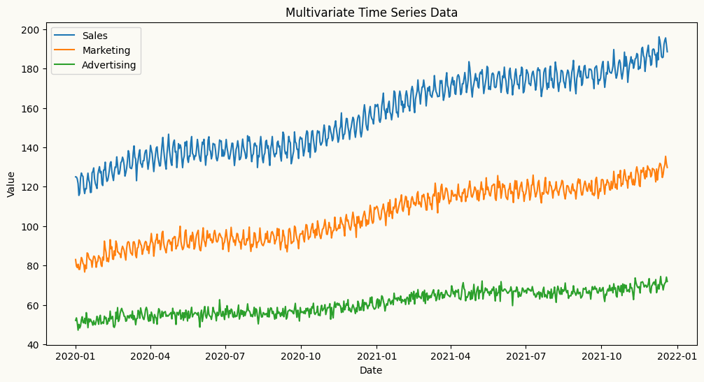
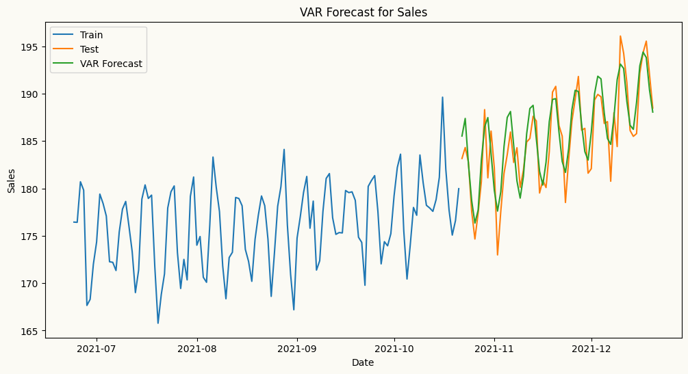
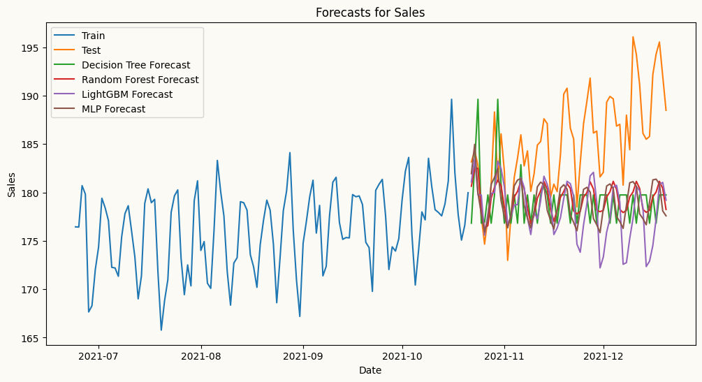

All models share a consistent interface — each accepts a target_col to specify the target series, along with any model-specific parameters. Fitting is done via .fit(df) and forecasting via .forecast(H). Exogenous variables, where supported, are passed at the forecasting step and aligned automatically. All models also expose .cross_validate() for evaluation, supporting both expanding and sliding window strategies with a configurable step size.
The table below summarises the available univariate forecasters, from simple baselines to statistical and machine learning models, along with a minimal usage example for each.
Models
Description
Usage Example
Naive Forecaster
A simple forecasting model that uses the last observed value or last seasonal value as the forecast.
from peshbeen.models import naive model = naive(target_col=‘target column name’, season_period=None) model.fit(df) forecasts = model.forecast(H=10)
ETS (Exponential Smoothing state space models)
ETS forecaster that wraps the statsmodels implementation, allowing for easy integration and forecasting.
from peshbeen.models import ets model = ets(target_col=‘target column name’, trend=‘add’, seasonal=‘add’, seasonal_periods=12, smoothing_level=0.1, smoothing_trend=0.1, smoothing_seasonal=0.1) model.fit(df) forecasts = model.forecast(H=10)
ARIMA (AutoRegressive Integrated Moving Average)
ARIMA — a fast, familiar forecaster backed by Nixtla’s statsforecast implementation, the fastest ARIMA in Python.
from peshbeen.models import arima model = arima(target_col=‘target column name’, order=(1, 1, 1)) model.fit(df) forecasts = model.forecast(H=10)
Machine Learning Regressors — any scikit-learn-compatible regressor, from LinearRegression, RandomForest and AdaBoost to XGBoost, LightGBM, and CatBoost.
A unified forecasting wrapper for any compatible regression model.
from peshbeen.models import ml_forecaster from sklearn.ensemble import RandomForestRegressor model = ml_forecaster(target_col=‘target column name’, estimator=RandomForestRegressor(n_estimators=100)) model.fit(df) forecasts = model.forecast(H=10)
Models time series with hidden regime changes (e.g. recession vs. growth, low vs. high volatility) using autoregressive dynamics and optional exogenous variables.
from peshbeen.models import ms_arr model = ms_arr(target_col=‘target column name’, n_components=2, lags = 2, n_iter=100) model.fit(df) forecasts = model.forecast(H=10)
GLM (Generalized Linear Models)
A statsmodels-backed generalization of linear regression that supports non-Gaussian response distributions — including Poisson for count data and Gamma for strictly positive, skewed data.
from peshbeen.models import glm model = glm(target_col=‘target column name’, family=‘poisson’, lags=2) model.fit(df) forecasts = model.forecast(H=10)
Usage example
Regardless of whether you use ETS, ARIMA, a machine learning regressor, or any other supported model, the interface is consistent. The .forecast(H) method returns a consistent numpy array of forecasts, and the .cross_validate() method provides a standardized way to evaluate model performance across different time series and forecasting horizons.
Index of data: A DatetimeIndex (or RangeIndex) is required for all models to ensure proper time series handling and forecasting. The index is recommended to be at a regular frequency without any missing timestamps.
Target column: The target_col parameter specifies the name of the column in the input DataFrame that contains the time series to be forecasted.
Example usage for different models are provided in cells below, demonstrating how to fit and forecast with each model type using the same dataset and target column for consistency.
Models like ARIMA or Random Forest assume the “rules” of a time series are constant. However, real-world data often undergoes structural shifts—moving between a high-volatility “crisis” mode and a stable “growth” mode.
While the models above assume a stable relationship over time, real-world data sometimes exhibits regime changes. Peshbeen includes native support for MS-ARR to model these “regime changes” (e.g., shifting from a high-volatility to a low-volatility state) explicitly. MS-ARR models capture these dynamics by allowing the time series to switch between different hidden regimes, each with its own autoregressive structure.
How it Works: The Hidden Dynamics
The AR-MSR model in peshbeen is defined by four core components:Regime-Dependent Dynamics: In each regime \(r\), the process follows a unique autoregressive structure:
\(y_t\) is the target variable at time \(t\), \(X_{tm}\) are optional exogenous variables, and \(\epsilon_t\) is the error term. The intercept (\(\beta_0\)), coefficients (\(\beta_i\)), and volatility (\(\sigma_r^2\)) all adapt to the specific regime.
Transition Probability Matrix (\(\mathbf{P}\)): The model learns the probability of moving from one regime to another. For a 2-regime model, the matrix \(\mathbf{P}\) looks like this:
where \(p_{ij}\) is the probability of transitioning from regime \(i\) to regime \(j\). This captures the “stickiness” of states (e.g., how likely a recession is to continue into the next period).
Estimation via EM (Expectation-Maximization) Algorithm: The model parameters are estimated using the EM algorithm, which iteratively refines estimates of the hidden states and the model parameters until convergence. Under the hood, peshbeen calculates the transition matrix and the filtered probabilities (the likelihood of being in a state at any given time) using the Baum-Welch algorithm. This uses a Forward-Backward pass to efficiently find the Maximum Likelihood Estimates (MLE) for the hidden Markov process.
The Markov Property: Transitions depend only on the current state, not the entire history. This allows the model to remain computationally efficient even as the complexity of the data increases.
Why use MS-ARR in Peshbeen?
Capture Non-Linearity: It models complex shifts that ARIMA or standard ML models might miss.
Regime Inference: Use model.predict_states() to see a historical timeline of when your series was likely in each regime. Use model.predict_proba() to get the probability of being in each regime at any point in time.
Adaptive Forecasting: The forecast accounts for the probability of a regime shift occurring during the forecast horizon \(H\).
## Create a sales series with regime switchesimport numpy as npimport pandas as pdnp.random.seed(42)n =300dates = pd.date_range(start="2000-01-01", periods=n, freq="ME")# Define hidden regimes (Regime 0 is "Stable", Regime 1 is "High")regime_switches = np.zeros(n)for i inrange(1, n):# Create persistent regimes (90% chance to stay in current state)if regime_switches[i-1] ==0: regime_switches[i] = np.random.choice([0, 1], p=[0.9, 0.1])else: regime_switches[i] = np.random.choice([0, 1], p=[0.2, 0.8])series = np.zeros(n)# Generate data with AR(1) logic based on the current regimefor t inrange(1, n):if regime_switches[t] ==0:# Regime 0: Low mean, high lag dependency series[t] =5+0.8* series[t-1] + np.random.normal(0, 1)else:# Regime 1: High mean, low lag dependency series[t] =25+0.2* series[t-1] + np.random.normal(0, 3)ms_data = pd.DataFrame({"sales": series}, index=dates)train_ms = ms_data.iloc[:-30]test_ms = ms_data.iloc[-30:]from peshbeen.models import ms_arrms_arr_model = ms_arr(target_col="sales", n_components=2, lags=2, add_constant=True, n_iter=50, tol=1e-4, random_state=42)ms_arr_model.fit(train_ms)ms_arr_forecast = ms_arr_model.forecast(H=30)regime_probs = ms_arr_model.predict_proba()## also create linear regression forecasts for comparisonfrom sklearn.linear_model import LinearRegressionlr_model = ml_forecaster(target_col="sales", model=LinearRegression(), lags=2)lr_model.fit(train_ms)lr_forecast = lr_model.forecast(H=30)import matplotlib.pyplot as pltfig, ax1 = plt.subplots(figsize=(14, 7))# Get regime probabilitiesregime_probs_train = ms_arr_model.predict_proba()regime_probs_forecast = ms_arr_model.forecast_forward # call for regime probabilities during forecast horizon# No lag offset needed - already aligned with full training data!n_train_tail =100# Get tail of training data and regime probstrain_dates_tail = train_ms.index[-n_train_tail:]train_sales_tail = train_ms["sales"].values[-n_train_tail:]regime_probs_tail = [regime_probs_train[0][-n_train_tail:], regime_probs_train[1][-n_train_tail:]]# Combine with forecastdates_full =list(train_dates_tail) +list(test_ms.index)regime_probs_full = [np.concatenate([regime_probs_tail[0], regime_probs_forecast[0]]), np.concatenate([regime_probs_tail[1], regime_probs_forecast[1]])]# Plot the time series on primary axisax1.plot(train_dates_tail, train_sales_tail, label="Train", color="C0", linewidth=2)ax1.plot(test_ms.index, test_ms["sales"], label="Test (Actual)", color="C1", linewidth=2)ax1.plot(test_ms.index, ms_arr_forecast, label="MS-AR(2) Forecast", color="C2", linestyle='--', linewidth=2)ax1.plot(test_ms.index, lr_forecast, label="Linear Regression Forecast", color="C3", linestyle='--', linewidth=2)ax1.set_ylabel("Sales", fontsize=12)ax1.set_xlabel("Date", fontsize=12)ax1.legend(loc="upper left", fontsize=10)ax1.grid(True, alpha=0.3)# Overlay regime probabilities as stacked areaax2 = ax1.twinx()ax2.stackplot(dates_full, regime_probs_full[0], regime_probs_full[1], labels=['Regime 0', 'Regime 1'], alpha=0.25, colors=['C2', 'C3'])ax2.set_ylabel("Regime Probability", fontsize=12)ax2.set_ylim(0, 1)ax2.legend(loc="upper right", fontsize=10)plt.title("Markov Switching AR(2) with Regime Probabilities", fontsize=14, fontweight='bold')plt.setp(ax1.get_xticklabels(), rotation=45, ha="right")plt.tight_layout()plt.show()

Multivariate forecasters
Models
Description
Usage Example
VAR (Vector AutoRegression)
A pure-NumPy multivariate forecaster that models linear interdependencies across multiple time series, with per-series lag structure control.
from peshbeen.models import var model = var(target_cols=[‘target column 1’, ‘target column 2’], lags={‘target column 1’: 2, ‘target column 2’: [1, 2, 7]}) model.fit(df) forecasts = model.forecast(H=10)
Machine Learning Regressors (multivariate) — any scikit-learn-compatible regressor, from LinearRegression and RandomForest to XGBoost, LightGBM, and CatBoost.
Forecasts multiple series simultaneously by leveraging interdependencies among them, using any scikit-learn-compatible regressor.
A multivariate extension of MS-ARR that models multiple time series with hidden regime changes using vector autoregressive dynamics and optional exogenous variables.
Example for multivariate forecasting works using the VAR model.
Peshbeen’s VAR model allows you to specify different lag structures for each target series, enabling you to capture the unique temporal dependencies of each series while modeling their interdependencies. Different than the implementation of the standard VAR in statsmodels, which applies the same lag structure to all series, Peshbeen’s VAR can have, for example, one series with 2 lags and another with 1, 2, and 7 lags. This flexibility allows user to tailor the model to the specific characteristics of each series, improving forecasting performance.
import numpy as npimport pandas as pdimport matplotlib.pyplot as plt## Create a multivariate autoregressive sales data with 3 features: sales, marketing spend, and advertising spend to show if we can capture the relationships between past values of all three features to forecast the future values of sales. date_range = pd.date_range(start='2020-01-01', periods=720, freq='D')np.random.seed(42)doy = date_range.dayofyear.to_numpy() # force NumPy, not pandas Indexdata1 =120+0.1* np.arange(720) +5* np.sin(2* np.pi * doy /7) +6* np.sin(2* np.pi * doy /365) + np.random.normal(0, 2, 720)data2 =80+0.07* np.arange(720) +3* np.sin(2* np.pi * doy /7) +4* np.sin(2* np.pi * doy /365) + np.random.normal(0, 2, 720)data3 =50+0.03* np.arange(720) +1* np.sin(2* np.pi * doy /7) +2* np.sin(2* np.pi * doy /365) + np.random.normal(0, 2, 720)# create a multivariate datasetmultivariate_data = pd.DataFrame({'sales': data1, 'marketing': data2, 'advertising': data3}, index=date_range)## add the day of week and month as categorical variables to the multivariate datasetmultivariate_data["day_of_week"] = multivariate_data.index.dayofweekmultivariate_data["month"] = multivariate_data.index.month# plot the multivariate dataplt.figure(figsize=(12, 6))plt.plot(multivariate_data.index, multivariate_data['sales'], label='Sales')plt.plot(multivariate_data.index, multivariate_data['marketing'], label='Marketing')plt.plot(multivariate_data.index, multivariate_data['advertising'], label='Advertising')plt.title('Multivariate Time Series Data')plt.xlabel('Date')plt.ylabel('Value')plt.legend()plt.show()

from peshbeen.models import var#split the data into train and test sets mv_train_data = multivariate_data.iloc[:-60]mv_test_data = multivariate_data.iloc[-60:]from sklearn.preprocessing import OneHotEncoderohe = OneHotEncoder(drop='first', sparse_output=False, handle_unknown="ignore")cat_variables = ["day_of_week", "month"]# we can specify different lag structures for each target series, enabling us to capture the unique temporal dependencies of each series while modeling their interdependencies.# This flexibility allows user to tailor the model to the relationships between the series, improving forecasting performance.var_model =var(target_cols=['sales', 'marketing', 'advertising'], lags={'sales': 7, 'marketing': [1, 7], 'advertising': 5}, cat_variables=['day_of_week', 'month'], categorical_encoder=ohe)var_model.fit(mv_train_data)var_forecasts = var_model.forecast(H=60, exog=mv_test_data[['day_of_week', 'month']])
# plot the forecasts and the actual values for salesplt.figure(figsize=(12, 6))plt.plot(mv_train_data.index[-120:], mv_train_data['sales'][-120:], label='Train')plt.plot(mv_test_data.index, mv_test_data['sales'], label='Test')plt.plot(mv_test_data.index, var_forecasts['sales'], label='VAR Forecast')plt.title('VAR Forecast for Sales')plt.xlabel('Date')plt.ylabel('Sales')plt.legend()plt.show()

Example for multivariate forecasting works using machine learning regressors. As with the VAR model, Peshbeen’s multivariate machine learning forecaster allows you to specify different lag structures or set of transformations for each target series, enabling you to capture the unique temporal dependencies of each series while modeling their interdependencies. For each target series, you can specify a different set of lags, rolling statistics, and/or exponential moving averages as features with a dictionary like lags={'target column 1': 3, 'target column 2': [1, 2, 7]} or lag_transform={'target column 1': [RollingMean(window=7), RollingStd(window=7)], 'target column 2': [RollingMean(window=1), RollingStd(window=7)]}.
In the backend, Peshbeen’s multivariate machine learning forecaster creates a single feature matrix for all target series, where each row corresponds to a specific time point and each column corresponds to a lag or transformation of a specific target series. For each target series, a separate regression model is trained using the same feature matrix designed to capture the interdependencies among the series.
Lets visualize the feature matrix for a simple example with two target series, sales and marketing, and a lag structure of lags={'sales': [1, 2], 'marketing': [1, 2, 7]}. The feature matrix would look like this:
time
sales_lag_1
sales_lag_2
marketing_lag_1
marketing_lag_2
marketing_lag_7
Sales (target)
Marketing (target)
t
sales(t-1)
sales(t-2)
marketing(t-1)
marketing(t-2)
marketing(t-7)
sales(t)
marketing(t)
t+1
sales(t)
sales(t-1)
marketing(t)
marketing(t-1)
marketing(t-6)
sales(t+1)
marketing(t+1)
t+2
sales(t+1)
sales(t)
marketing(t+1)
marketing(t)
marketing(t-5)
sales(t+2)
marketing(t+2)
…
…
…
…
…
…
…
…
In this matrix, each row corresponds to a specific time point (e.g., t, t+1, t+2), and each column corresponds to a lag of either the sales or marketing series. The regression model for sales would use all these features to predict the future values of sales, while the regression model for marketing would use the same features to predict the future values of marketing. This setup allows both models to leverage the interdependencies between the two series while also capturing their unique temporal dynamics through different lag structures.
from peshbeen.models import ml_mv_forecaster# let's use Decision Tree, RandomForest and LightGBM as examples of tree-based models for forecasting sales using the past values of sales, marketing, and advertising as features. We will also include the day of week and month as additional features to capture any seasonality in the data.# let's also use MLP from sklearn as an example of a neural network-based model for forecasting sales using the same features.from sklearn.tree import DecisionTreeRegressorfrom sklearn.ensemble import RandomForestRegressorfrom lightgbm import LGBMRegressorfrom sklearn.neural_network import MLPRegressortarget_vars = ['sales', 'marketing', 'advertising']tailored_lags = {'sales': 7, 'marketing': 7, 'advertising': [1, 7]}cat_vars = ['day_of_week', 'month']## Decision Treedt_model = ml_mv_forecaster(model=DecisionTreeRegressor(max_depth=7, random_state=123), target_cols=target_vars, lags=tailored_lags, cat_variables=cat_vars, categorical_encoder=ohe)dt_model.fit(mv_train_data)dt_forecasts = dt_model.forecast(H=60, exog=mv_test_data[cat_vars])## Random Forestrf_model = ml_mv_forecaster(model=RandomForestRegressor(n_estimators=100, max_depth=7, random_state=123), target_cols=target_vars, lags=tailored_lags, cat_variables=cat_vars, categorical_encoder=ohe)rf_model.fit(mv_train_data)rf_forecasts = rf_model.forecast(H=60, exog=mv_test_data[cat_vars])## LightGBMlgbm_model = ml_mv_forecaster(model=LGBMRegressor(n_estimators=100, max_depth=7, verbose=-1, random_state=123), target_cols=target_vars, lags=tailored_lags, cat_variables=cat_vars, categorical_encoder=ohe)lgbm_model.fit(mv_train_data)lgbm_forecasts = lgbm_model.forecast(H=60, exog=mv_test_data[cat_vars])## MLPmlp_model = ml_mv_forecaster(model=MLPRegressor(hidden_layer_sizes=(64, 32), random_state=123), target_cols=target_vars, lags=tailored_lags, cat_variables=cat_vars, categorical_encoder=ohe)mlp_model.fit(mv_train_data)mlp_forecasts = mlp_model.forecast(H=60, exog=mv_test_data[cat_vars])
## plot the forecasts and the actual values for salesplt.figure(figsize=(12, 6))plt.plot(mv_train_data.index[-120:], mv_train_data['sales'][-120:], label='Train')plt.plot(mv_test_data.index, mv_test_data['sales'], label='Test')plt.plot(mv_test_data.index, dt_forecasts['sales'], label='Decision Tree Forecast')plt.plot(mv_test_data.index, rf_forecasts['sales'], label='Random Forest Forecast')plt.plot(mv_test_data.index, lgbm_forecasts['sales'], label='LightGBM Forecast')plt.plot(mv_test_data.index, mlp_forecasts['sales'], label='MLP Forecast')plt.title('Forecasts for Sales')plt.xlabel('Date')plt.ylabel('Sales')plt.legend()plt.show()

From the plot above, while MLP captures the trend better than the other models in this case, decision tree, random forest, and LightGBM fail to capture the trend as they are not designed to capture trend in time series data. Let’s difference sales series and try again. We can difference the series by passing differencing order to the ml_mv_forecaster as differencing_order={'sales': 1, 'marketing': 1, 'advertising': 1} as we confirm that all series are non-stationary with the ADF test below.
from peshbeen.statstools import unit_root_testunit_root_test(multivariate_data['sales'])unit_root_test(multivariate_data['marketing'])unit_root_test(multivariate_data['advertising'])
ADF p-value: 0.914411 and data is non-stationary at 5% significance level
ADF p-value: 0.937516 and data is non-stationary at 5% significance level
ADF p-value: 0.921366 and data is non-stationary at 5% significance level
(np.float64(0.9213662589709057), None)
ADF test results show that all series are non-stationary, confirming the need for differencing. Also after differencing, we can check if there is any significant cross-correlation between the differenced series with the ccf_plot function from statsmodels module. The plot below shows that there are significant cross-correlations at various lags, particularly between the differenced sales and marketing series, which suggests that including lagged values of marketing as features in the model for sales could improve forecasting performance. However, the differenced advertising series does not show significant cross-correlations with the sales series, except slightly at lag 1, 3, and 14, which may indicate that it has less predictive power for sales compared to marketing. Therefore, we can consider including lagged values of marketing in the model for sales, while being more cautious about including lagged values of advertising due to the weaker cross-correlation.
# also let's check the cross-correlation between the differenced sales and marketing series to see if there is any lagged relationship between them that we can capture with our models. We can use the `plot_ccf` function from `peshbeen.statsplots` to visualize the cross-correlation function (CCF) between the two series.from statsmodels.graphics.tsaplots import plot_ccf# from matplotlib.ticker import MaxNLocatordiff_sales = multivariate_data['sales'].diff().dropna()diff_marketing = multivariate_data['marketing'].diff().dropna()diff_advertising = multivariate_data['advertising'].diff().dropna()_, ax = plt.subplots(2, 1, figsize=(12, 6))plot_ccf(diff_sales, diff_marketing, lags=30, ax=ax[0])plot_ccf(diff_sales, diff_advertising, lags=30, ax=ax[1])ax[0].set_title('CCF between Differenced Sales and Marketing')ax[1].set_title('CCF between Differenced Sales and Advertising')for a in ax: a.grid(True, alpha=0.3, linestyle='--', linewidth=0.7) a.set_xticks(np.arange(0, 31, 1))plt.tight_layout()plt.show()
From the plot above, all models, including decision tree-based models, capture the trend better than before, especially Random Forest after differencing. We can also pass trend = {'sales': 'linear', 'marketing': 'ets', 'advertising': 'linear'} to the ml_mv_forecaster to explicitly model the trend in the data.